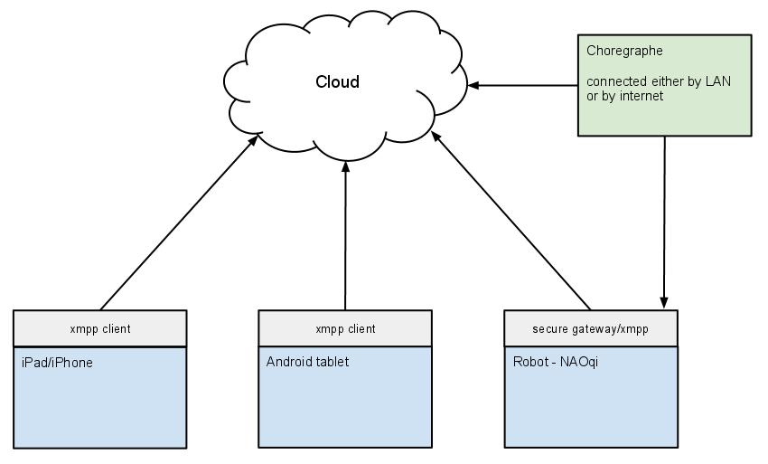
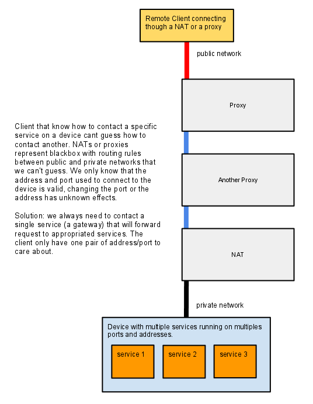
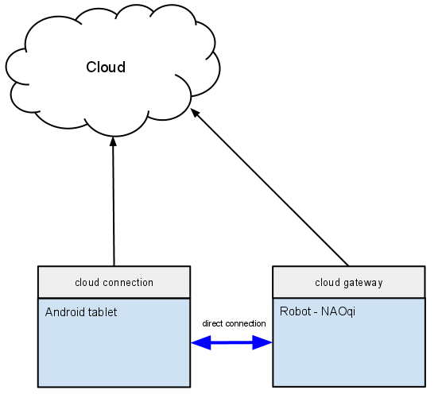

Internal networking:
communication between applications and services available on the same robot. This is also called “direct connection protocol” in this document.
Remote networking:
communication between remote applications and a device. This is also called “Remote connection protocol” in this document.
Single Computer Robot
Warning
add cloud connection on the first two schema
Robot have a single computer with only an external address. All services use internal networking to communicate. External clients use gateways.
Multiple Computer Robot
Warning
add cloud connection on the first two schema
Robot can have multiple computer with differents IP addresses that communicate together to from a single robot. In that case it’s particularly important to differenciate between internal and external busses. They do not need the same security level and do not have the same constraint. We want the internal network to never change, to be a DMZ. We want the external network to be very controlled, external network can have address that change according to the desire of the client. (for example from one hotspot to another).
To easily support Choregraphe and external PC tools, only one public address have to be used to connect to the robot. So we need to have a public gateway, that forward request from/to services. The public gateway (the program that forward the data), need to run on the computer that have both internal and external address.
Remote Device / Cloud
We want to connect multiple devices together.
This is only applicable for external connection. There is no restriction on internal networking that can be considered like a DMZ.
NAT and Proxy support for local network
The solution is to use a gateway with a single address and port.
direct connection by internet
To send audio/video between two device using internet, we can use a third party server where each device connect to. But we can try to use a more efficient connection mean by using STUN and similar techniques.
see also http://en.wikipedia.org/wiki/STUN and http://en.wikipedia.org/wiki/NAT_traversal